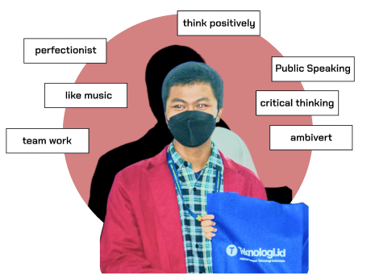

Front-End
Html
Css
JavaScript
TailwindCss
Back-End
PHP
Laravel
Design
Figma
Illustrator
Canva
Interested?? download my CV here.
Download CV
Dante Heisenberg
I'm a programmer especially in the Front-End Web Development who usually makes Websites without a specific purpose LOL, just for fun. Download my CV bellow.

Muhammad Risky
Software EngineersSchool
At school I was a very introverted person but when I was in learning mode. I would really become a very very very active extrovert.
Public
At school I was a very introverted person but when I was in learning mode. I would really become a very very very active extrovert.